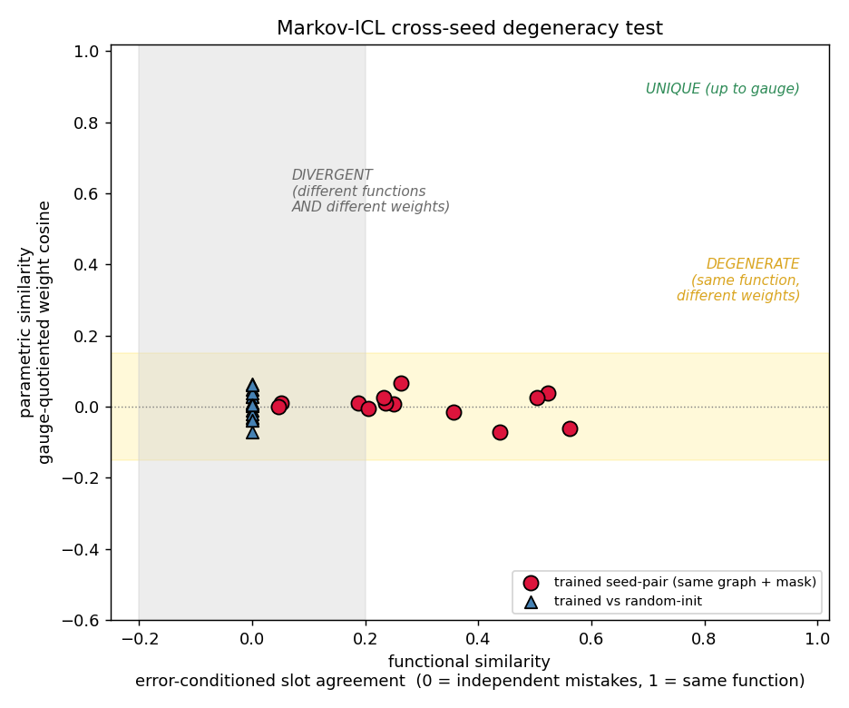
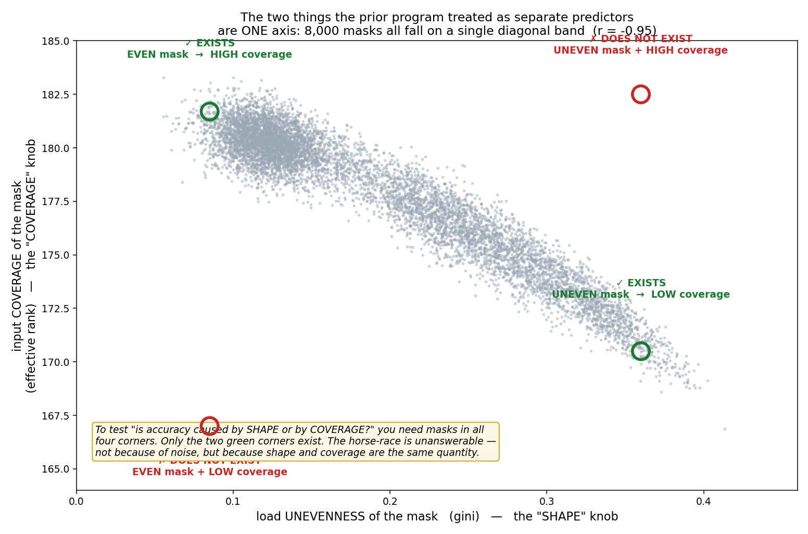
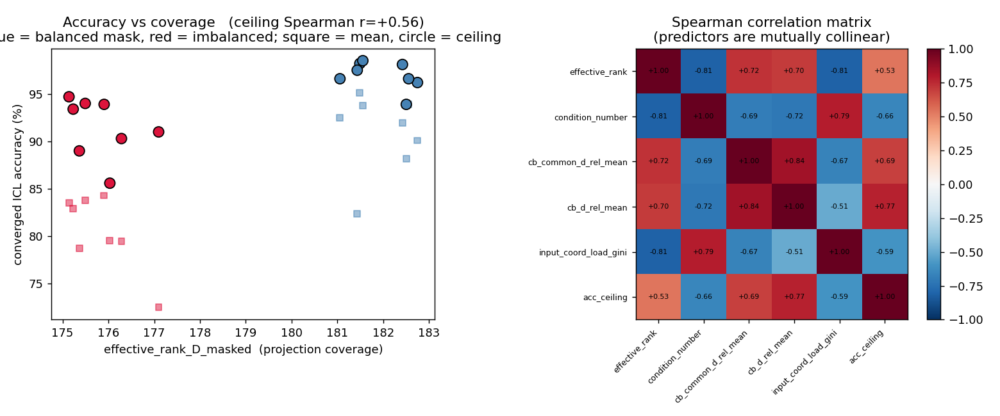
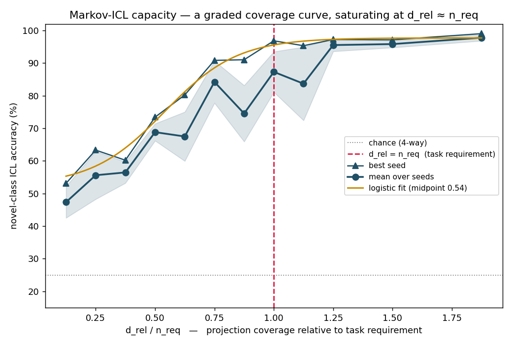

Mechanistic analysis
Topology of In-Context Learning in Chemical Reaction Networks
Two attention-free chemical reaction networks learn to classify in context. We open up 95 trained networks — a Winner-Take-All network and a first-order Markov network — and recover how the computation works, and what training does and does not pin down.
Summary
In-context learning (ICL) in these chemical reaction networks is not a discrete winner-take-all computation and not attention. It emerges at a hard capacity threshold, runs on a graded mixture of chemical species, and is implemented by a degenerate family of circuits. Part I — four results on the Winner-Take-All network:
- ICL emerges at a capacity threshold. Accuracy is at chance with 2 species and saturates near 99% from 8 species — with four context positions, reliable ICL needs n ≈ 2·Nc.
- The mechanism is global subspace projection, not pairwise attention. The whole context+query vector is projected onto learned comparison subspaces.
- A soft mixture does the computation. The “winner” holds only ~60% of the concentration; decoding from it alone reproduces the network only ~a third of the time.
- The learned topology is degenerate. Independent training runs reach parametrically different circuits (cross-seed weight similarity ≈ chance) that nonetheless cover the same comparison subspaces.
We also establish an exact gauge symmetry of the model (§7) which makes the bare reaction parameters K and β individually unphysical.
Part II turns to the paper’s other attention-free model — a first-order Markov reaction network — and to a prior effort that asked whether reaction-graph topology controls its in-context learning. Two further results:
- The learned circuit is degenerate. Five seeds of one topology reach networks with no shared weight structure (cross-seed weight similarity = chance), and — below the accuracy ceiling — not even the same function. This survives training to convergence.
- Capacity is projection coverage. The accuracy ceiling is set by how well the input mask covers the input space. The prior effort’s competing topology metrics turn out to be that one quantity in disguise.
- The capacity curve saturates at the predicted dimension. Swept down through starvation, ICL accuracy rises with coverage and saturates right where the prior effort’s required-dimension formula said it should — but as a graceful ramp, not the WTA network’s hard threshold.
1The model
The task. The network is shown a sequence of N = 4 context examples, each a point in D = 4 dimensions drawn near a Gaussian-mixture class mean, each carrying a discrete label (one of L = 128). A query is appended that exactly copies one of the context examples; the network must output that example’s label. The decisive test uses novel classes — class means never seen during training — so the answer cannot be memorised in the weights. It must be read off the context. That is in-context learning.
The network. There is no transformer, and no attention in the usual sense: nowhere is a query–key dot product zi·zq computed. Instead the whole sequence is flattened into one vector X ∈ ℝ(N+1)D = ℝ20, and a set of n chemical species compete over it.
context + query
project & soft-rectify
species compete
softmax over positions
vote context labels
Each species j projects the entire input through a learned weight vector Wj and a soft-rectifier, giving a reaction rate:
The species compete through a selection score rj = βj/fj; the network favours the species of smallest score. At steady state the chemical concentrations are
and a learned decoder B maps the concentration vector onto the four context positions, which then vote their labels:
The learnable parameters are the projections W, the per-species constants Kj and βj, and the decoder B — on the order of 200–300 numbers in total. The temperature τ of the soft winner-take-all is small (0.01).
Comparison subspaces. To answer correctly a species must fire when the query matches context item i — that is, detect membership in the subspace Mi = {X : zi ≈ zquery}. A clean comparator has its weight vector Wj equal and opposite across the context-i block and the query block, so that Wj·X measures the difference zi − zquery. The paper calls this mechanism subspace projection; §4 confirms it is what the trained networks actually do.
2Checkpoints & method
We analyse 15 trained networks: the two original paper checkpoints, their reproductions retrained from scratch on the MIT Engaging cluster, a capacity sweep over n = 2, 4, 6, 8, 10, 12 species, and seed replicates at the two headline sizes n = 8 and n = 12. Every retrain reproduces the paper’s novel-class accuracy to within ~0.5%.
Each network is probed on one fixed evaluation set of 2,000 sequences (in-distribution and novel-class) through a single instrumented forward pass, so that every analysis — connectivity, species utilisation, routing, decision geometry, reaction parameters, and cross-model comparison — reads exactly the same internal traces. All quantities below are on the novel-class split: true in-context generalisation.
3Result 1 — ICL emerges at a capacity threshold
In-context learning is absent in small networks and appears, sharply, once the network has about eight species.
| species n | novel-class accuracy | regime |
|---|---|---|
| 2 | 25.9% | chance (4-way task) |
| 4 | 70.8% | one detector per position — insufficient |
| 6 | 85.0% | partial |
| 8 | 98.2% | ICL works — n = 2·Nc |
| 10 | 99.2% | saturated |
| 12 | 99.2% | saturated (over-provisioned) |
With Nc = 4 context positions, a network with only four species — one detector per position — reaches just 71%. Reliable ICL arrives at n ≈ 8 = 2·Nc: roughly two detector species per comparison subspace. Beyond that, accuracy is flat; the extra species in the n = 10 and 12 networks are not converted into extra performance.

4Result 2 — The mechanism is subspace projection
The species are comparators: each projects the whole input onto a context-versus-query difference subspace. The structure that solves the task lives in projection space, not in the input.
In every working network, all four context positions are covered by clean comparator species — weight vectors that are equal and opposite across a context block and the query block, with alignment cosines reaching 1.0. This is the subspace projection mechanism made explicit: no pairwise score is ever formed; the comparison is done by a single linear projection of the joint context–query vector.

The same point shows in the geometry. Embedding the 2,000 evaluation inputs in their raw form reveals no class structure at all. Embedding them in projection space — the per-species scores Wj·X — reveals clear structure, and that structure is organised by which species fires, not by the answer. The network builds its partition; the input does not contain one.

5Result 3 — A soft mixture, not a winner
Despite the name, the winner-take-all does not pick one species. The steady state spreads over two to three species, and that graded mixture — not the single strongest species — carries the computation.
The dominant species holds only ~56–68% of the total concentration. To test whether that dominant species is the computation, we decode from it alone — route through its decoder row only — and compare to the network’s real answer. For the working networks (n ≥ 8) the dominant species alone reproduces the answer just ~33% of the time. The mixture overrides the dominant species in roughly 65% of examples, and when it does it is correct ~99% of the time. The graded combination is the algorithm.

Roughly 2.2 species decode to each context target, and species that share a target have near-orthogonal weight vectors — they are genuinely different detectors, not redundant copies. This is the “branch” structure behind the 2·Nc capacity threshold of Result 1: each comparison subspace is covered by a small set of distinct detectors whose graded combination, not whose winner, gives the answer.

6Result 4 — The topology is degenerate
There is no canonical circuit. Networks trained from different random seeds reach parametrically different solutions — while still covering the same comparison subspaces.
Across 23 cross-seed pairs of same-size networks, we align species optimally and measure how similar the aligned weight vectors are. The cross-seed weight cosine is only ~0.25 — barely above the magnitude expected for random 20-dimensional vectors. Independent runs share almost no weight-level structure.
What is shared is the function. The comparison-subspace pattern — which context-versus-query subspaces are detected — aligns at cosine ~0.59, well above chance. So the picture is precise: the topology is parametrically degenerate but functionally constrained. Many distinct circuits implement in-context learning; what they have in common is not a weight pattern but the set of comparison subspaces they cover.

7The gauge symmetry
The model has an exact symmetry that makes its bare reaction parameters unphysical — and ignoring it corrupts measurement.
For any species r and any λ > 0, the transformation
leaves the network’s input–output function exactly unchanged — verified numerically: predictions do not move, and attention shifts by less than 10−4. A trained Kr or βr therefore carries no meaning on its own; only the gauge-invariant combinations — the projections W, the products Kr·βr, and the effective decoder Kr·Br — are physical.
This is not a technicality. A species’ concentration is gauge-dependent: under a random gauge transform the normalised concentration vector moves by up to 0.3. Measured naively, the “effective number of species used” averages 6.7; measured on the gauge-invariant contribution it averages 4.9. The analyses above use only gauge-invariant quantities. The n = 12 networks are visibly over-provisioned: 63% capacity utilisation, with 21 idle near-zero-weight “default” species across the set.

Part II · The first-order Markov network
8The other network
The paper introduces a second attention-free ICL network, and a separate research effort built a large experimental program around it — asking whether the topology of its reaction graph controls how well it learns in context. We re-examined that program, and the model.
The model. The task is the same as Part I — four context examples plus a query, novel classes, predict the query’s label. But the network is now a first-order Markov reaction network: n = 6 chemical species joined by 20 directed reactions. The flattened input X ∈ ℝ20 sets the 20 reaction log-rates through a weight matrix K; the network relaxes to a steady-state distribution over the six species (via the matrix-tree theorem); a learned decoder B maps that onto the four context positions, which vote their labels — the same readout idea as Part I.
context + query
over 6 species
softmax over positions
vote context labels
The input mask. The weight matrix K has 20×20 = 400 entries. A fixed binary input mask — chosen before training, part of the architecture — decides which half of those entries may be nonzero: which input coordinates are allowed to couple to which reactions. The prior program varied this mask, called it “topology”, and asked which masks make the network a better in-context learner.
What we test. Two questions. Is the learned circuit unique? — do independent training runs reach one solution, a degenerate family, or scatter? And what sets the capacity? — does the mask structure control the accuracy ceiling, and through which property? We retrain a grid of 16 masks × 5 seeds = 80 networks to convergence. The prior program’s runs were single-seed and stopped early; both choices, we found, corrupt the conclusions — so every result below is multi-seed and trained to convergence.
9Result 5 — The learned circuit is degenerate
Five seeds of one fixed topology reach networks that share no weight structure — and, below the accuracy ceiling, not even the same function. Training to convergence does not change this.
For each topology we trained five seeds and compared them pairwise. The trap is that “agreement” conflates three things: two networks being accurate, computing the same function, and having the same weights. We measure each separately. The decisive functional probe is error-conditioned: on the queries that both networks get wrong, do they make the same mistake? Two accurate networks agree just by both being right — only the shared mistakes reveal a shared function.
- Parameters — non-identifiable. After removing the model’s exact gauge freedoms, the cross-seed weight cosine is ≈ 0 — indistinguishable from the cosine between random untrained initialisations. No two seeds share any parametric structure.
- Internal state — divergent. Two trained seeds’ steady-state distributions are more different from each other than from an untrained network. Training pushes each seed onto its own region of state space.
- Function — only partly shared. Error-conditioned agreement is about +0.25 of a possible 1.0. The seeds converge toward a common function as a topology’s accuracy ceiling rises, but never onto it — the residual mistakes stay seed-specific.
Crucially this survives convergence. Retraining lifted accuracy from ~75% to 77–98%; the weight cosine and the internal-state divergence did not move. The scatter of solutions is not an artefact of stopping early.

This refines the Part I picture. The WTA network was parametrically degenerate but functionally constrained (§6) — one function, many circuits — because it was trained above its capacity threshold to a ~99% ceiling, where the function is fully pinned. The Markov networks here cap below 100%, and below the ceiling both the weights and the function scatter. Degeneracy is the rule; a pinned function is the special case of reaching the ceiling.
10Result 6 — ICL capacity is projection coverage
The accuracy ceiling is set by one quantity: how well the input mask covers the input space. The prior program’s competing “topology metrics” are that one quantity in different disguises.
The prior program’s method was to regress accuracy on a bag of mask metrics — an effective rank, a “tree-diff multiplicity”, a load balance — and crown the strongest predictor. That method has no identifiability here, for a structural reason.
The predictors are one quantity. We searched 8,000 admissible masks and measured two supposedly distinct properties: the shape of the mask (how evenly it spreads input coupling across coordinates) and its coverage (the effective rank of the masked projection). They are r = −0.95 collinear, with zero achievable overlap: no mask is even-but-low-coverage, and none is uneven-but-high-coverage. They are not two knobs. Mechanically they cannot be — a starved input coordinate is rank-deficient, so an uneven mask simply is a low-coverage mask. Across the 16-mask grid all five varying metrics are mutually collinear (|r| = 0.70–1.00). The prior regression horse-race was comparing one quantity with itself.

And that quantity sets the ceiling. Trained to convergence, high-coverage masks reach a 94–98% accuracy ceiling; low-coverage masks 86–95%. Accuracy tracks coverage at Spearman r ≈ +0.6 to +0.8. Within either group there is no further signal — the effect is the coverage axis alone. This is the Part I mechanism (§4) carried to the Markov network: in-context learning capacity is a property of how well the input-coupled projection covers the input space, not of graph shape.

One question this grid cannot reach: all 16 masks sit on a single fixed reaction graph, so whether the graph’s own shape matters beyond the mask is untestable here. That is the open follow-up.
11Result 7 — The capacity curve saturates at the predicted dimension
Swept from starvation to saturation, ICL accuracy is governed by projection coverage. It saturates exactly where the prior program’s required-dimension formula predicts — but as a graceful ramp, not the WTA network’s hard threshold.
Result 6 showed accuracy tracking coverage, but every mask there had ample coverage — the network was never seen to fail. Here we sweep the coverage axis down through failure: 12 levels of input-mask density, with the masked relative dimension drel ranging from 20 to 300, five seeds each, trained to convergence. The natural scale is the required dimension the prior program derived from the task, nreq = 2N(N+1)D = 160 — a formula it defined but never tested, because all of its runs sat above it.

- Coverage is a capacity variable. Best-seed accuracy rises monotonically from ~53% when the mask is starved (drel = 20) to ~98% when coverage is ample — a 45-point span. Result 6’s narrow range was just the top of this curve.
- Saturation lands at the predicted dimension. The ceiling is reached at drel ≈ 160 = nreq. The prior program’s required-dimension formula, never tested in its own work, correctly marks where accuracy stops improving.
- The transition is graded, the failure graceful. The curve is a smooth ramp, not a step. Even at drel = 20 — eight times below nreq — the network holds ~50% on the four-way task, far above chance. It degrades; it does not collapse.
This is the sharpest point of contact with Part I. Both networks have the same capacity variable — projection coverage — and the Markov network saturates at the dimension the task analysis predicts. What differs is the shape of the transition: the discrete-species WTA network switches on hard at n = 2Nc (§3), at chance below it; the steady-state Markov network ramps on smoothly and never quite fails. Two implementations of one capacity principle, with different sharpness.
12What it means
Two attention-free reaction networks, one mechanism. In both, in-context learning is subspace projection: the joint context–query vector is projected onto learned comparison directions, and capacity is set by how well those projections cover the input space — a hard threshold at n = 2Nc for the WTA network (§3), a graded ramp saturating at the task’s required dimension for the Markov network (§10–11). Neither forms a query–key product; neither needs attention. The WTA computation runs on a soft, graded mixture of species, not a discrete winner.
In both, the solution is degenerate. Independent training runs reach circuits with no shared weight structure. What they share is functional — and only as far as training is pushed. The WTA network, trained above capacity to its ~99% ceiling, converges onto one function carried by many different circuits. The Markov network, capped below its ceiling, does not even fully converge in function: weights and residual behaviour both scatter. A trained network is one sample from a family, not a canonical circuit, and its bare reaction parameters are gauge (§7) — individually unphysical. Degeneracy is the rule; a pinned function is the special case of reaching the ceiling.
This also resets the prior topology program. Its central question — does reaction-graph topology control in-context learning — was answered with single-seed, under-trained runs and a regression between metrics that are one quantity in disguise. Corrected, the answer is cleaner than the program’s own: capacity is projection coverage, the per-topology scatter it chased was seed degeneracy, and whether graph shape matters — varying the reaction graph itself, not just the input mask — is still open. That is the one experiment worth running next.
Part I analysis code: ICL/topology_analysis/ (six modules
m1–m6 over a shared instrumented core, plus run_all.py); full
output — 112 figures and summary.json —
ICL/results/topology_analysis/. Part II:
ICL/markov_degeneracy/ (degeneracy_test.py,
retrain.py, make_decorrelated_masks.py,
rank_vs_shape.py, and FINDINGS.md).
Repository statmech-learning/MarkovComputations, branch
wta-icl-reproduction. Models: the Winner-Take-All and first-order
Markov ICL chemical reaction networks (arXiv 2601.06712).